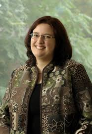

| Home | What is Computational Linguistics? | About the Degree | Transferring Into the Program | Graduate Programs | Research Opportunities | Internships and Jobs |
Participating in research can be a very educational experience and can round out and supplement courses. Getting involved in research as an undergrad can help prepare for graduate study, set you apart to employers, and even make you a more competitive applicant to scholarships and graduate degree programs.
Find below some faculty members that conduct research related to Computational Linguistics/Natural Language Processing. We encourage you to contact faculty members that do research on topics that are of interest to you and see if they might have space for you to work in their lab group as an undergraduate research assistant.
| Name | Department of Primary Appointment | Research Interests | Lab Group | |
|  | Catherine Blake | Library and Information Science | Text mining, information synthesis, collaborative information behaviors, recognizing textual entailment, summarization, evidence-based discovery, meta-analysis, socio-technical systems | |
| Jana Diesner | Library and Information Science | Social computing; computational social science; natural language processing; network analysis; machine learning; covert networks; covert information; socio-technical systems. | ||
| Miles Efron | Library and Information Science | Information Retreival and Machine Learning. | ||
| Margaret Fleck | Computer Science | "My research interests include computational linguistics, computer vision, and programming language tools to support language and vision research. Right now, I'm working on unsupervised algorithms that learn word boundaries from transcribed speech." | ||
| Roxana Girju | Linguistics | Natural Language Processing / Computational Linguistics; Information Extraction and Retrieval; Text Data Mining; Computational Semantics, Inference and Reasoning; Machine Learning; Cognitive Linguistics and Computational Cognitive Modeling with applications to Question Answering, Machine Translation, and Knowledge Base Systems (and more recently Computer Vision and Medical Informatics). | Semantic Frontiers Group | Julia Hockenmaier | Computer Science | Computational Linguistics/Natural Language Processing | Natural Language Group |
| Dan Roth | Computer Science | Machine learning and inference methods to facilitate natural language understanding. | Cognitive Computation Group | |
| Lane Schwartz | Linguistics | Computational linguistics; Machine translation; Natural language processing; Compilers and programming languages. | ||
| ChengXiang Zhai | Computer Science | Intelligent Information Systems, Information Retrieval, Data Mining, Natural Language Processing, Machine Learning, Biomedical and Health Informatics, Intelligent Education Systems. | TIMAN Group |
Consider contacting one of the following faculty members if you are interested in Speech Processing.
| Name | Department of Primary Appointment | Research Interests | Lab Group | |
| Jont Allen | Electrical and Computer Engineering | Human Speech Recognition | Human Speech Recognition Group | |
| Mark Hasegawa-Johnson | Electrical and Computer Engineering | Acoustic phonetics, Audio signal processing and speech recognition, Speech and auditory physiology. | Statistical Speech Technology Group | |
| Stephen Levinson | Electrical and Computer Engineering | Speech processing, Language acquisition, Natural language understanding, Speech synthesis | Language Acquisition and Robotics Group |
For more information and resources, visit the website for the Office of Undergraduate Research. Undergraduates who already have funding have a much easier time finding research advisors, so consider applying to a research fellowship for undergraduates like the Illinois Scholars Undergraduate Research Program.
Computer Science + Linguistics students may be interested in the Natural Language Processing summer research internship at the USC Information Sciences Institute.
Last Updated: August 18, 2015